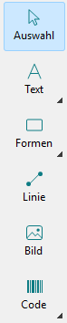
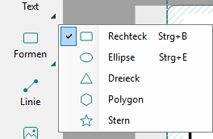
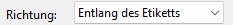
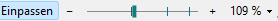

Werkzeuge, Richtung und Zoom
Die Richtung legt fest, wie der Inhalt auf dem Band liegt. Der Zoom ändert nur die Größe auf dem Bildschirm, nicht den Druck.
-
Werkzeugleiste
Links stehen die Werkzeuge in fünf Gruppen: Text, Formen, Linie, Bild und Code. Ein Klick fügt das Werkzeug ein, dessen Symbol die Gruppe gerade zeigt.
Ein kleines Dreieck unten rechts heißt: Die Gruppe hat mehrere Werkzeuge. Ein Klick auf das Dreieck oder langes Drücken öffnet die Liste, ebenso →, wenn die Gruppe gewählt ist. Die Gruppe zeigt danach das zuletzt benutzte Werkzeug, auch wenn Sie es über das Menü oder seine Taste eingefügt haben, und auch beim nächsten Start.


- Text
- Grafiktext (eine Zeile) und Mengentext (bricht im Rahmen um), siehe Grafiktext und Mengentext
- Formen
- Rechteck, Ellipse, Dreieck, Polygon, Stern, siehe Formen
- Code
- Barcode und QR-Code, siehe Barcodes und QR-Codes
Alle Werkzeuge stehen auch im Menü Einfügen. Mit weniger Platz kommt die Leiste ohne Namen aus: Ansicht > Werkzeugnamen anzeigen oder ein Rechtsklick auf die Leiste. Ist das Fenster zu niedrig, bekommt die Leiste eine zweite Spalte.
Ansicht > Überlauf beim Bearbeiten zeigen gehört zum Mengentext: siehe Mengentext.
-
Richtung
Rechts in den Einstellungen, solange nichts ausgewählt ist, oder Ansicht > Ansicht drehen:

- Entlang des Etiketts
- Die Länge des Etiketts läuft von links nach rechts. Für lange Etiketten.
- Quer zum Band
- Die Breite des Bandes läuft von links nach rechts. Für kurze, breite Etiketten wie 62 × 29 mm und für runde Etiketten.
Ein neues Etikett beginnt quer zum Band, wenn es nicht länger als breit ist, sonst entlang. Beim Drehen bleiben die Objekte auf dem Bildschirm, wo sie sind; gedruckt wird das Etikett so, wie es angezeigt wird. Die Richtung wird mit dem Etikett gespeichert, Strg + Z macht sie rückgängig.
-
Zoom
Unten rechts in der Statusleiste:

Einpassen passt das Etikett ins Fenster und hält es dort, auch wenn Sie das Fenster größer oder kleiner machen. Minus, Schieberegler und Plus zoomen von 25 % bis 800 %, ebenso das Mausrad über dem Etikett und der grauen Fläche darum (um die Mausposition, mit oder ohne Strg) und über der Statusleiste. Umschalt + Mausrad verschiebt die Ansicht nach links und rechts, nach oben und unten die Bildlaufleisten. Ein seitlich gekipptes Mausrad verschiebt ebenfalls nach links und rechts.
Ein Klick auf die Prozentzahl öffnet dieses Menü; es steht auch unter Ansicht:
- Einpassen
- das Etikett passt ins Fenster
- 100 % (Originalgröße)
- das Etikett so groß wie gedruckt
- Punktgenau
- 1 oder 2 Bildpunkte je Druckpunkt. Nur hier zeigt die Zeichenfläche jeden Druckpunkt scharf; bei jedem anderen Zoom wird sie geglättet, damit gerasterte Bilder keine Streifen zeigen.
Der Schieberegler rastet bei 100 % und bei den punktgenauen Stufen ein.